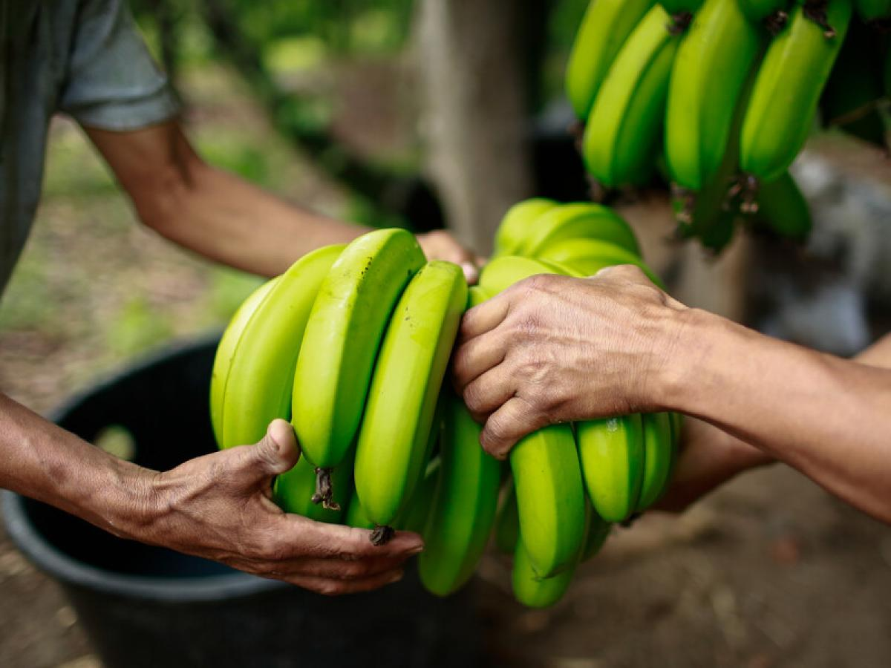
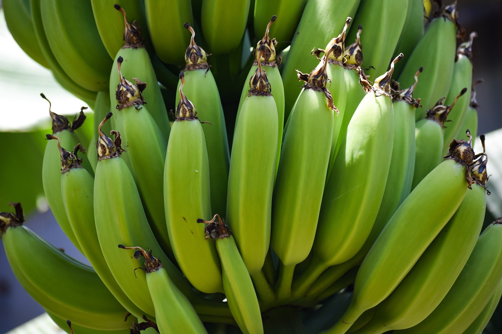
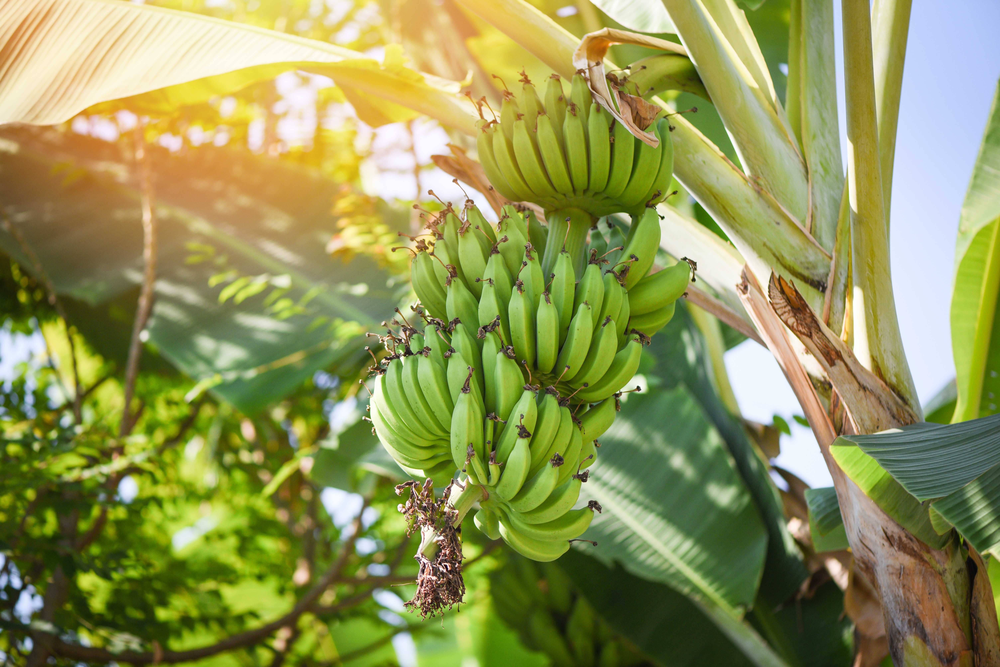
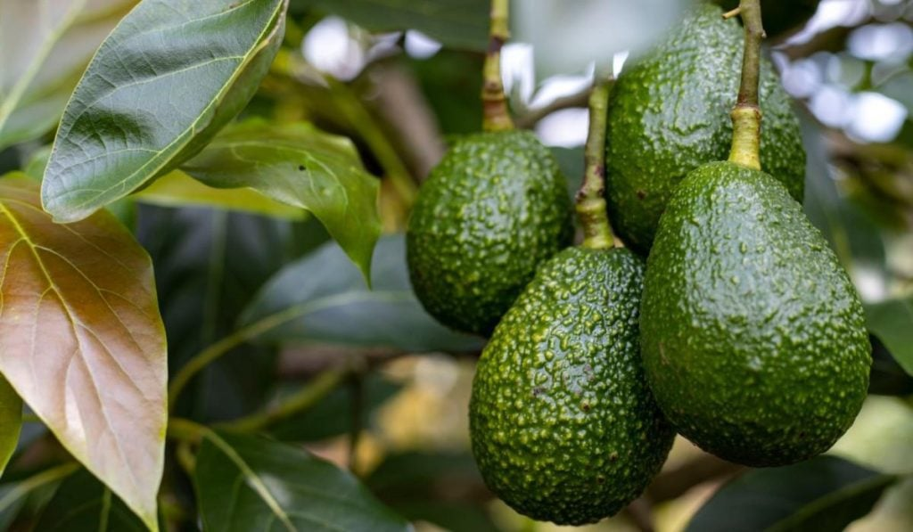
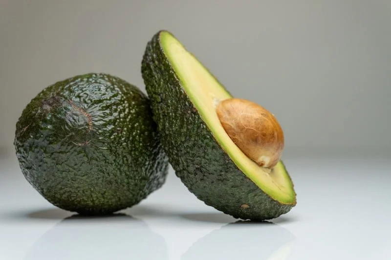
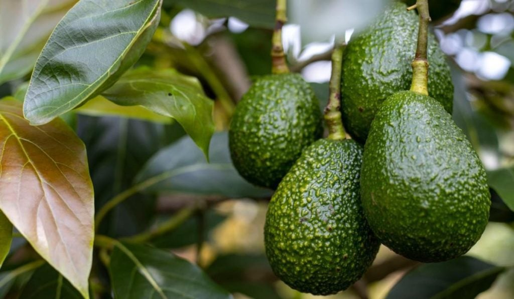
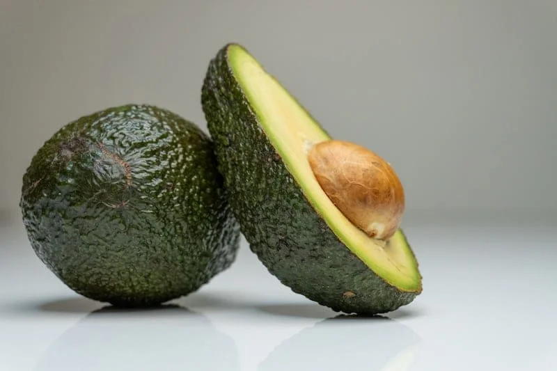

Plátano Hartón
Variedad de textura firme y sabor pronunciado. Ideal para frituras y preparaciones tradicionales. Rico en potasio y energía natural.

Variedad de textura firme y sabor pronunciado. Ideal para frituras y preparaciones tradicionales. Rico en potasio y energía natural.
Plátano de forma corta y pulpa suave. Perfecto para asados y postres; ofrece un sabor ligeramente dulce al madurar.


Banano de consumo fresco, con dulce sabor y textura suave. Muy apreciado para consumo en crudo y para exportación.
 



Pulpa cremosa y sabor suave. Excelente para platos gourmet y con alto contenido de grasas saludables.
Cítrico aromático con jugo abundante. Ideal para bebidas, conservas e industria gastronómica.